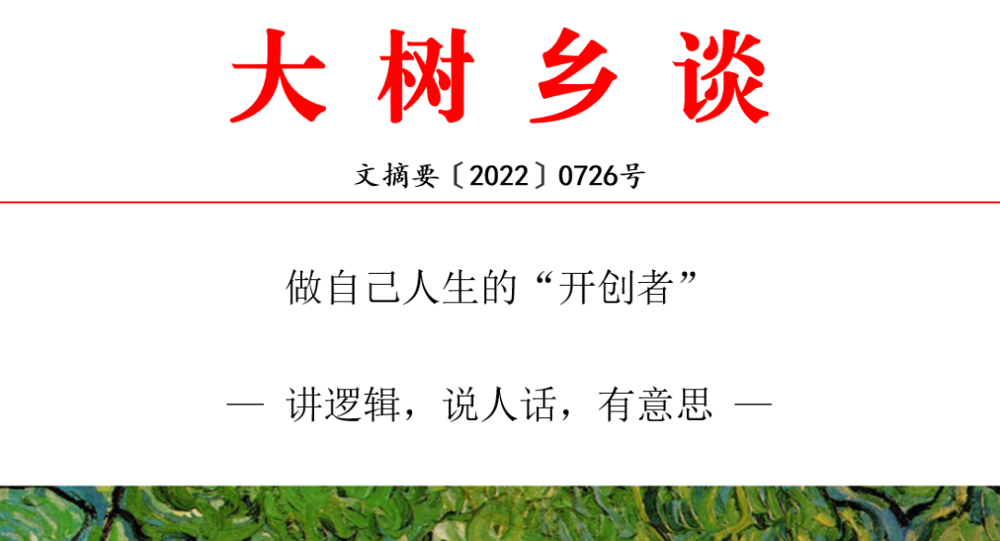
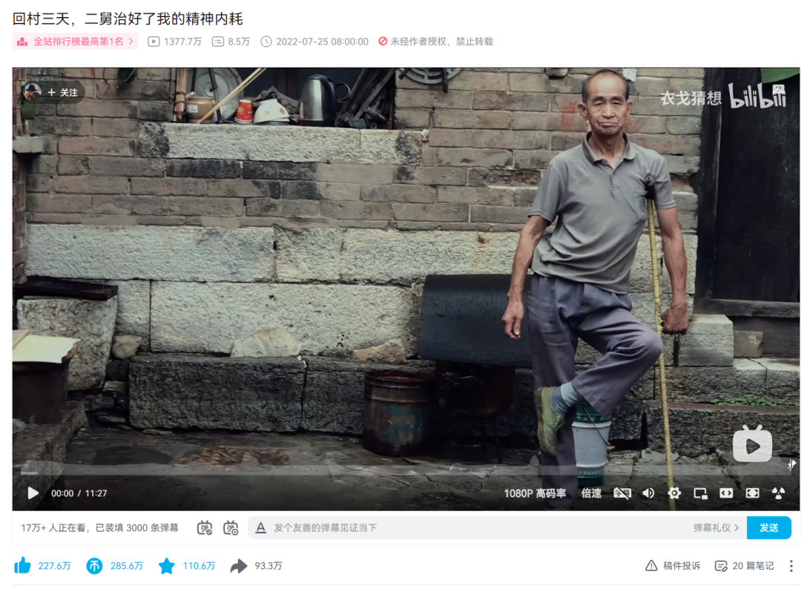
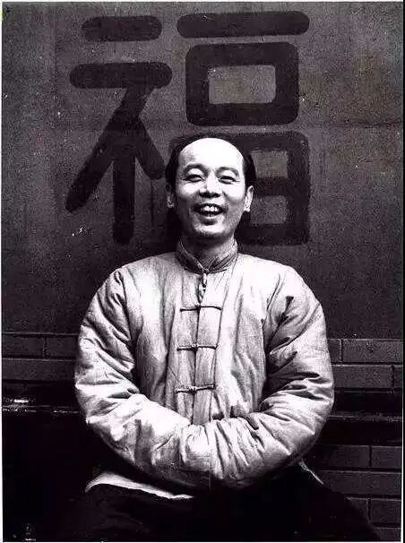

如果不能出人头地，又该如何过好一生？

- 1 -
今天上午，爱人转给小镇一个视频，来自UP主“衣戈猜想”发布于B站的《回村三天，二舅治好了我的精神内耗》。11分27秒概括了一个普通人的一生，引起了全网的关注和讨论，发布38小时，仅B站点击超过1300万次，仍然有超过17万人同时在线观看。

在大环境越来越追求短平快、碎片化高频刺激的当下，出现这么一个视频，用极为简单、平实的语言、画面、音乐获得了现象级的关注，称得上“无心插柳柳成荫”。如果能够扩充到90分钟仍然保持如此节奏，或许可以成为中国版的《阿甘正传》，激励更多人。视频中的二舅，经历了颇多苦难，初中全校第一，高烧后村医的四针让他变成了残疾，从此改变了一生。如果没有这四针，或许二舅已经考上了大学、成了一名工程师，现在住着单位分的房、拿着退休金，可以悠游自适的颐养天年。
但人生没有如果，一条腿残疾的二舅学会了木匠活儿，去生产队给人做板凳，给镇上各村做木工，给出嫁的两个妹妹做那个时代少见的全套组合家具，还到部队做桌椅。后来二舅还学会了修很多东西，村里的小难题，他总有办法，即使后来遇到那个让他变成残疾的村医，也不过笑骂一句，照旧一瘸一拐的给人干活去了。人生没有回头，二舅也说了“下定决心，不怕牺牲，排除万难，去争取胜利”。“二舅”的一生令人动情，焦虑、痛苦的心也得以短暂慰藉，但之后呢？
- 2 -
“二舅”解不了任何人的精神内耗，也解不了视频作者的精神内耗。生活确实不容易，总会有痛苦、脆弱、难以支撑的时候，苦苦坚持之时，偶然的外部影响，比如短短的视频，确实可以抚慰内心，但这终究只能用来应急，仅仅是把自己带入视频中的“二舅”，让身心与视频传递的精神短暂合一，暂时驱散了痛苦。但痛苦仍然在，当擦干眼泪、回归现实，仍然要面对造成精神内耗和痛苦的一切，外部影响带来的短暂力量不过是无源之水、无根之木，既不能灌溉沙漠，也不能屹立不倒。
在与源源不断地痛苦拉锯下，终将重归现实。甚至，也不可能从“二舅”的一生中找到拯救自己的办法，毕竟“下定决心，不怕牺牲，排除万难，去争取胜利”的道理早就听了一万遍，又有几个人真正面对的时候能够做到呢？“二舅”属于过去那个刚刚告别百年动荡、为了温饱仍然要拼尽全力的时代，能够活着就很好了。邻村的庸医确实让二舅残疾了，但也只有在推行“赤脚医生”之后，才让大多数中国农民有了求医问药的机会，而不是像过去几千年那样只能硬撑。

余华《活着》剧照时代已经变了，很多人看“二舅”，想到的是残疾的二舅因此丧失了恢复高考后的金榜题名，丧失了治学、做官、经商的种种可能，丧失了改革开放、市场经济大潮之下的种种红利，因此想到了自己正在面临的高考难、就业难、买房难、结婚难、育儿难、养老难。但，我们生活的世界、面临的困难和二舅终究不同了，二舅生活在物质生活贫瘠的人情社会，而观看视频的人却大多漂泊在异乡、经历种种人情冷暖。二舅的苦年轻人没吃过，但年轻人正承受的苦二舅同样没经历过。
我们不可能真的对“二舅”的遭遇感同身受。这就是大多数人看完这个视频后的真实情况：感动、感慨、崇敬、震撼、振奋，但一切仅仅停留在内心，激荡内心之外，不过是一个转发、一句感慨、一声叹息。再然后，或许共鸣一两天也就忘了？继续打游戏、看番剧、刷抖音，利用一切短平快的高频刺激愉悦自己，然后强撑着睡眠不足的身体成为职场上的螺丝钉。或许有一天想起来曾经的感动，却在信息洪流下，已经忘了到底是哪一个视频。最重要的行动呢？总不能一直被别人的故事感动，却不去改变自己的人生。倘若停留在表面的感动，又如何能解决自己的精神内耗？
- 3 -
成年人的世界不是孩子，但偏偏很多成年人仍然是孩子。小时候难受了哭一声，就会有爸妈心急如焚地跑过来，想尽一切办法安抚；成年之后，还可能吗？自己遇到的那些困难、痛苦又能对谁说？对父母、亲人说？忍心吗？至于亲人以外，无论朋友、同事还是陌生人，喊破喉咙又能有什么用呢？甚至还可能遭受更大的创伤。就好像“精神内耗”，永远是自己的事情，无论治好治不好，都与别人无关，好坏的结果都由自己承担，平时无法说出口，才更需要通过一个视频宣泄出来。
但是，任何人的人生解药都不能治自己人生的“病”，成年人终究需要做自己的“开创者”。的确，“开创”很难，这意味着要走出一条任何前人没有走过的路，但自己的人生，任何前人走过吗？如果自己不去“开创”，难不成指望别人帮自己开路？如果别人能帮着走好自己的人生，那又为什么会有“富不过三代”的说法呢？富贵之家尚且如此，何况缺乏长辈指点和关照的普通人呢。幼儿园的小孩子都已经在高唱《孤勇者》，开始走入社会的00后都已经醒悟自己的人生要靠自己，倘若成年人仍然抱着不想长大的孩子气，以懦弱、躺平、逃避的态度回避压力，又如何开拓自己的人生路？
世界变化万千，再相近的人生也不会相同，除了自己，没有任何人能代替自己活过一生，无非怎么个活法。《论语》有这么一段话“取乎其上，得乎其中；取乎其中，得乎其下；取乎其下，则无所得矣”。一个人的一生，也可以分“上中下”，但这并不是用世俗的金钱地位而区分，毕竟人与人的境遇截然不同，真正的区分在于是否敢于开拓自己的人生路。总是把希望寄托在某个偶像身上，想着只要照搬偶像的做法，就可以成功，那就算侥幸富贵，仍然是“取乎其下”；纵然自己有诸多短板，意志不坚、能力不足，不知道该怎么做、也不知道自己能不能做到，但是仍然敢于立志做自己人生的开创者，尝试走出一条别人没走过的路，那就是“取乎其中”；如果更进一步，通过总结提炼别人的经验，融会贯通，不但能立志，还能够知行合一、久久为功，那已经称得上“取乎其上”。
至于最终结果如何，不过是“尽人事，听天命”。如二舅这样的偶像确实需要效仿，就像写作需要从阅读、概括、模仿开始，但一定要明白效仿就像仿作，不可或缺但绝非终点，我们需要做的就是在不断的效仿中提炼可以融入自身、强健自我的良药，最终走上独立创作。（参考《再论“文能通神”三重境》）当然这很难，就算是小镇也不过多走了几步而已，前面仍然是漫漫征途。正因为小镇才不过刚走了几步，所以更希望传递给更多人小镇曾经的教训、经验以及自己的方法。
但一定要明白，人生路没有“偶像”，学习“先进、典型”仅仅是表面，更重要的是总结其中的道理，想清楚自己到底想要什么，进而依理、顺心而行。这就是小镇理解的王阳明提出的“格物致知”：探究事物的原理，从中获得智慧，明白自己的内心，进而 “以理做舟，以心为舵，以德为帆” ，贯彻内心的要求、到达自己期望的地方，这就是“知行合一”。小镇最希望的就是大家能够从小镇的分享中，找到自己的道路。但一定要谋定则动，谋的不是完整的规划，而是目标、方向，只要方向是对的，再粗糙的行动也要胜过精致万倍的筹谋。
- 4 -
到这里其实已经可以结束了，但小镇的主业或者说核心能力是研究政策，所谓政策就是要剖析现状、分析原因、预测发展进而找到在当下干预未来的抓手。（参考《是被剥削的“奴隶”，还是自由的奋斗者？》）剖析事物的本质，是一切的根本。为什么《回村三天，二舅治好了我的精神内耗》全网关注？为什么生活在城市的80后、90后、00后等等年轻人对远离自己现实生活的“二舅”如此动容？小镇觉得有两点，一宏观、一微观。微观层面，也就是个体。中国的教育其实应该算西方的“精英教育”，几千年传统文化、中国几十年经济的持续增长，让中国人都学习了“屠龙技”，人人梦想着“王侯将相宁有种乎”，大多数人花了十几年时间学习如何当一个人上人，不愿普通、否认底层。
但长大以后却发现，空有“屠龙技”却无龙可屠，本想做“人上人”，却发现哪有这么多出人头地的机会，毕竟无论自己多努力，普通人才是大多数。但从来没有人告诉我们，如果不能成为人上人，到底又该如何与自己和解？小镇还有几个月就36岁了，所谓“三十而立，四十不惑”，但偏偏80后难以“不惑”，90后难以“自立”，大家都不傻，已经知道虽然从古至今颇有“大器晚成”的例子，但能够记入史册、为众人所知，足以证明稀少。努力还是要努力，但不得不面对一个难题： 如果这一生不能出人头地，是不是失败了？又该如何过好一生？这确实是一个难题，小镇也是经历过一些事情，或者说“两起一落”之后才在剧烈的冲击下有所明悟，如果以后机缘合适，小镇愿意与大家分享，现在还不是时候。
起起落落的冲击确实是令自我和解，甚至强健自身、挖掘内心本意的捷径，但走捷径是要付出代价的，多数人很难走的出来、更很难不留下心理创伤和阴影。所以仍然要寻找一种不经历起落、平平常常，但仍然能够让自己和解的方法。从这一点上，二舅的一生，或许是一种解法：不管遭遇什么，都要尽自己最大努力掌握主动权，在自己力所能及的范围内改变境遇，让自己和周围人过得更好一点。从这个意义上讲，“躺平”或许舒服一时，但不可能舒服一世。当然，小镇不是人生导师，也永远不会做导师，小镇仅仅是大家的同行者，躺平与否是个人的选择，小镇尊重，但小镇自己绝不躺平，也绝不会让自己的孩子躺平。
正所谓“天行健，君子以自强不息”。再说宏观，谈谈当下的改革。现在正是“破而未立”之时，过去的种种已经开始破裂，但适应新时代的种种尚未落定，不仅个人迷茫，组织乃至国家也要寻路。过去讲“摸着石头过河”，水浅还可以弯腰摸石头，但现在已经到了“深水区”，河面很宽、河水很深，石头早就看不到、摸不着了，再指望摸石头不但误时还会受损。那么现在就需要调整了，但也不能走极端，我们现在仅仅是到了大河的“深水区”，还不是太平洋的“万米海沟”，过去“摸石头”的经验教训仍然可以参考，所以决不能搞回头路、开倒车，更不能否定过去，水越深反而越要行稳致远。
这说的是国家的改革，也是人生的开拓。无论国家还是个人，都需要找到参考答案之外的新解法，而这需要获得更多的经验、样本。小镇曾说要将分享持续至少二十年，就是希望能有越来越多的人一起同行，共解人生难题。《新的开始，始终如一》）
其他文章推荐
■ 经济如此困难，中国会重新刺激房地产吗？
如果喜欢，还请点赞、“在看”和关注吧 欢迎分享，让更多人发现“大树乡谈”